library("readr")
library("dplyr")
library("FactoMineR")
library("tsne")
library("purrr")
library("ggplot2")
library("ggimage")Proyecto: The joy of programming
Etapa 2 de 4
Introducción
En esta etapa aplicamos los algoritmos de reducción de dimensiones presentados a nuestro dataset de pinturas de Bob Ross. Podemos repasar la explicación teórica de estos algoritmos en el material del curso. La implementación que se presenta a continuación, se ejecuta en dos lenguajes R y Python.
Los algoritmos que se presentan en esta etapa son análisis de componentes principales y t-SNE. La aplicación de estos algoritmos tiene finalidad la comprensión de los datos a través de distintas visualizaciones; que resumen las características de las pinturas, los elementos que estas contienen y su estructura de similaridad. Además, estas expresiones gráficas se utilizan para visualizar los grupos resultantes de la etapa anterior.
Objetivo actual
La segunda etapa del proyecto está orientada a cumplir el segundo objetivo específico:
Aplicar algoritmos de reducción de dimensiones a las pinturas con el fin de crear visualizaciones e interpretaciones.
Preliminares
En primer lugar debemos cargar las librerías que vamos a utilizar.
Este código llama las librerías necesarias para los procedimientos.
readr: Este paquete se utiliza para leer datos rectangulares, como archivos CSV, de manera eficiente.dplyr: Proporciona un conjunto consistente y fácil de usar de funciones para la manipulación de datos. Facilita las operaciones comunes como filtrado, selección, ordenación y resumen de datos.FactoMineR: Especializado en análisis factorial y otros métodos para el análisis exploratorio de datos multivariados.tsne: Implementa el algoritmo t-SNE (t-distributed stochastic neighbor embedding), que se utiliza para reducir la dimensionalidad de los datos, especialmente útil para visualizar datos complejos en dos o tres dimensiones.purrr: Parte del tidyverse, este paquete proporciona herramientas para trabajar con funciones y datos de manera más consistente y efectiva.ggplot2: Una de las bibliotecas más populares para la creación de gráficos en R. Utiliza una sintaxis declarativa para construir visualizaciones basadas en capas.ggimage: Extensión de ggplot2 que permite incluir imágenes en visualizaciones, lo que puede ser útil para representar datos junto con imágenes.
import numpy as np
import matplotlib.pyplot as plt
from matplotlib.offsetbox import OffsetImage, AnnotationBbox
import seaborn as sns
import os
import pandas as pd
from sklearn.decomposition import PCA
from sklearn.preprocessing import StandardScaler
from sklearn.manifold import TSNEEste código llama las librerías necesarias para los procedimientos.
numpy: Proporciona soporte para arrays y matrices, y funciones matemáticas para trabajar con ellos.matplotlib.pyplot: Biblioteca de visualización en Python. “plt” es una convención común para referirse a ella.matplotlib.offsetbox: Parte de Matplotlib, se utiliza para mostrar imágenes en anotaciones de gráficos.seaborn: Biblioteca de visualización de datos basada en Matplotlib. Simplifica la creación de gráficos estadísticos.os: Proporciona funciones para interactuar con el sistema operativo, como la manipulación de rutas de archivos.pandas: Biblioteca para el análisis de datos que proporciona estructuras de datos flexibles y herramientas de manipulación.sklearn.decomposition.PCA: Utilizado para realizar Análisis de Componentes Principales (PCA) y reducir la dimensionalidad de los datos.sklearn.preprocessing.StandardScaler: Se utiliza para estandarizar (escalar) las características de un conjunto de datos.sklearn.manifold.TSNE: t-SNE (t-distributed stochastic neighbor embedding) es una técnica para visualizar datos de alta dimensión en dos o tres dimensiones.
Generamos una lista de configuración. Esto es una buena práctica de programación en ciencia de datos. En esta lista vamos a almacenar información que utilizaremos en el código de forma reiterada.
mi_setup <- list(
datos_pinturas = file.path("01_data", "bob-ross.csv"),
carpeta_pinturas = file.path("01_data", "bob-ross_paintings"),
archivo_grupos = file.path("01_data", "resultados_r_01.csv"),
gr_acp_file = file.path("gr_acp_r.png"),
gr_tsne_file =file.path("gr_tsne_r.png")
)
theme_set(theme_minimal())Este código genera una lista de configuración. En esta lista se guardan las rutas y otros parámetros que se usan más adelante en el desarrollo.
datos_pinturas: Ruta del archivo “bob-ross.csv” ubicado en la carpeta “01_data”. Este archivo contiene datos relacionados con pinturas de Bob Ross.carpeta_pinturas: Ruta de la carpeta “bob-ross_paintings” ubicada en la carpeta “01_data”. Contiene imágenes de las pinturas de Bob Ross.archivo_grupos: Ruta del archivo “resultados_r_01.csv” ubicado en la carpeta “01_data”. Este archivo contiene resultados de los grupos obtenidos en el análisis previo.gr_acp_file: Ruta del archivo “gr_acp_r.png”. Es la ruta para guardar la imagen resultante del análisis de Componentes Principales (ACP).gr_tsne_file: Ruta del archivo “gr_tsne_r.png”. Es la ruta para guardar la imagen resultante del algoritmo t-SNE (t-distributed stochastic neighbor embedding).
Adicionalmente, se configura ggplot2 para usar el tema minimal por defecto.
mi_setup = {
"datos_pinturas": os.path.join("01_data", "bob-ross.csv"),
"carpeta_pinturas": os.path.join("01_data", "bob-ross_paintings"),
"archivo_grupos": os.path.join("01_data", "resultados_py_01.csv"),
"gr_acp_file": os.path.join("gr_acp_py.png"),
"gr_tsne_file": os.path.join("gr_tsne_py.png")
}
sns.set_style('whitegrid')
sns.set_context('notebook')Este código genera una lista de configuración. En esta lista se guardan las rutas y otros parámetros que se usan más adelante en el desarrollo.
datos_pinturas: Ruta del archivo “bob-ross.csv” ubicado en la carpeta “01_data”. Este archivo contiene datos relacionados con pinturas de Bob Ross.carpeta_pinturas: Ruta de la carpeta “bob-ross_paintings” ubicada en la carpeta “01_data”. Contiene imágenes de las pinturas de Bob Ross.archivo_grupos: Ruta del archivo “resultados_py_01.csv” ubicado en la carpeta “01_data”. Este archivo contiene resultados de los grupos obtenidos en el análisis previo.gr_acp_file: Ruta del archivo “gr_acp_py.png”. Es la ruta para guardar la imagen resultante del análisis de Componentes Principales (ACP).gr_tsne_file: Ruta del archivo “gr_tsne_py.png”. Es la ruta para guardar la imagen resultante del algoritmo t-SNE (t-distributed stochastic neighbor embedding).
Adicionalmente, se configura seaborn para usar el tema whitegrid y el contexto notebook por defecto.
Leemos nuestro archivo de datos.
read_csv(mi_setup$datos_pinturas) -> tb_pinturas
read_csv(mi_setup$archivo_grupos) -> tb_gruposSe utiliza las función read_csv de la librería readr para leer archivos CSV y se asignan los resultados a dos dataframes: tb_pinturas y tb_grupos. Aquí está la explicación:
read_csv(mi_setup$datos_pinturas) -> tb_pinturas: Se lee el archivo CSV cuya ruta está especificada enmi_setup$datos_pinturasutilizando la funciónread_csvdel paquetereadr. El dataframe resultante se asigna a la variabletb_pinturas.read_csv(mi_setup$archivo_grupos) -> tb_grupos: Similar a la primera línea, se lee el archivo CSV cuya ruta está enmi_setup$archivo_grupos. El dataframe resultante se asigna a la variabletb_grupos.
tb_pinturas = pd.read_csv(mi_setup["datos_pinturas"])
tb_grupos = pd.read_csv(mi_setup["archivo_grupos"])Utilizando la librería pandas, mediante la función pd.read_csv se leen los archivos CSV y se asignan los resultados a dos DataFrames: tb_pinturas y tb_grupos. Aquí está la explicación:
tb_pinturas = pd.read_csv(mi_setup["datos_pinturas"]): Se lee el archivo CSV cuya ruta está especificada enmi_setup["datos_pinturas"]. El DataFrame resultante se asigna a la variabletb_pinturas.tb_grupos = pd.read_csv(mi_setup["archivo_grupos"]): Similar a la primera línea, se lee el archivo CSV cuya ruta está enmi_setup["archivo_grupos"]. El DataFrame resultante se asigna a la variabletb_grupos.
Preparación de los datos
Seleccionamos las columnas con las que vamos a realizar nuestros análisis. En este caso se trata de todas las columnas de atributos de las pinturas.
tb_pinturas %>%
select(- EPISODE, - TITLE) -> tb_pinturas_caractSe utiliza el operador %>% de la biblioteca dplyr para realizar una operación de selección de columnas en el DataFrame tb_pinturas. Aquí se explica paso a paso:
tb_pinturas %>%: El operador%>%(pipe) se utiliza para pasar el objetotb_pinturasal siguiente paso de la cadena de operaciones.select(- EPISODE, - TITLE): Se utiliza la funciónselectdel paquetedplyrpara elegir columnas específicas del DataFrametb_pinturas. La notación-se utiliza para excluir las columnas llamadas “EPISODE” y “TITLE”. Esto significa que todas las columnas excepto “EPISODE” y “TITLE” serán seleccionadas.-> tb_pinturas_caract: El resultado de la selección se asigna a un nuevo DataFrame llamadotb_pinturas_caract.
tb_pinturas_caract = tb_pinturas.drop(["EPISODE", "TITLE"], axis=1)Este código elimina las columnas “EPISODE” y “TITLE” del DataFrame tb_pinturas, y el resultado se guarda en un nuevo DataFrame llamado tb_pinturas_caract. Se realiza una operación de eliminación de columnas en el DataFrame tb_pinturas. Aquí se explica paso a paso:
tb_pinturas_caract = tb_pinturas.drop(["EPISODE", "TITLE"], axis=1): Se utiliza el método drop de pandas para eliminar las columnas “EPISODE” y “TITLE” del DataFrame tb_pinturas. El argumento axis=1 indica que la operación se realiza a lo largo de las columnas.
Métodos de reducción de dimensiones
En nuestro dataframe pinturas_carac están almacenadas las características de las pinturas en forma de variables binarias. El propósito del ejercicio es aplicar las técnicas de reducción de dimensiones, ACP y t-SNE, para generar visualizaciones que nos permitan entender nuestros datos.
A lo largo del ejercicio realizamos distintas tareas.
Aplicamos el análisis de componentes principales reteniendo los 2 ejes de mayor varianza.
Aplicamos el algoritmo t-SNE reduciendo los datos a 2 dimensiones.
Elaboramos una visualización en cada caso de la distribución de las pinturas en el plano usando puntos.
Elaboramos una visualización en cada caso de la distribución de los grupos encontrados en el ejercicio previo usando puntos y colores.
Elaboramos una visualización en cada caso de la distribución de las pinturas en el plano usando las imágenes de las pinturas.
De esta manera comprendemos mejor nuestros datos y el funcionamiento de los métodos de reducción de dimensiones.
Análisis de componentes principales
Iniciamos aplicando el análisis de componentes principales al conjunto de datos.
PCA(tb_pinturas_caract, graph = FALSE, ncp = 2) -> ls_pca_resultado
ls_pca_resultado %>%
pluck("ind", "coord") %>%
as_tibble() %>%
setNames(c("X", "Y")) -> tb_pcaEste código realiza un análisis de Componentes Principales (PCA) sobre el DataFrame tb_pinturas_caract y posteriormente manipula los resultados para obtener un nuevo DataFrame llamado tb_pca. A continuación, se presenta la explicación paso a paso:
Realizar el Análisis de Componentes Principales (PCA):
- Se utiliza la función
PCAdel paqueteFactoMineRpara realizar un análisis de Componentes Principales en el DataFrametb_pinturas_caract. - Los parámetros
graph = FALSEindican que no se deben generar gráficos durante el análisis. - El parámetro
ncp = 2especifica que se deben retener las dos primeras componentes principales. - El resultado se almacena en la variable
ls_pca_resultado.
- Se utiliza la función
Manipular los Resultados del PCA:
Se utiliza la tubería (
%>%) junto con las funciones depurrrydplyrpara realizar varias operaciones en los resultados del PCA.ls_pca_resultado %>% pluck("ind", "coord"):- La función
pluckse utiliza para extraer las coordenadas de las observaciones del resultado del PCA.
- La función
%>% as_tibble():- Se utiliza la función
as_tibblepara convertir las coordenadas a un formato de tibble.
- Se utiliza la función
%>% setNames(c("X", "Y")):- La función
setNamesse usa para renombrar las columnas del tibble como “X” y “Y”.
- La función
El resultado final se almacena en el DataFrame
tb_pca.
arr_pinturas_standar = StandardScaler().fit_transform(tb_pinturas_caract)
mod_pca = PCA(n_components=2)
mod_pca = mod_pca.fit(arr_pinturas_standar)
tb_pca = pd.DataFrame(
data = mod_pca.transform(arr_pinturas_standar),
columns = ["X", "Y"]
)Este código utiliza la librería scikit-learn para realizar un análisis de Componentes Principales (PCA) sobre el DataFrame tb_pinturas_caract y crea un nuevo DataFrame llamado tb_pca. A continuación, se presenta la explicación paso a paso:
Explicación paso a paso del código:
Estandarizar los Datos:
Se utiliza
StandardScalerpara estandarizar el DataFrametb_pinturas_caract. Esto significa que cada característica (columna) se ajusta para tener una media de cero y una desviación estándar de uno. El métodofit_transformrealiza el ajuste y la transformación en una sola llamada.Crear y Ajustar el Modelo PCA:
Se crea una instancia de la clase
PCAcon la especificación de retener dos componentes principales (n_components=2). Luego, se ajusta el modelo a los datos estandarizados utilizando el métodofit.Transformar los Datos con PCA:
Se utiliza el modelo PCA entrenado para transformar los datos estandarizados. Esto significa proyectar los datos originales en el espacio de las dos primeras componentes principales.
Crear el DataFrame
tb_pca:Se crea un nuevo DataFrame llamado
tb_pcautilizando las componentes principales obtenidas. Este DataFrame tiene dos columnas, “X” y “Y”, que representan las dos dimensiones principales del espacio transformado por PCA.
Ahora tenemos un nuevo dataframe tb_pca en el que guardamos las coordenadas de nuestras pinturas. Vamos a visualizarlas:
tb_pca %>%
ggplot +
aes(x = X, y = Y) +
geom_point()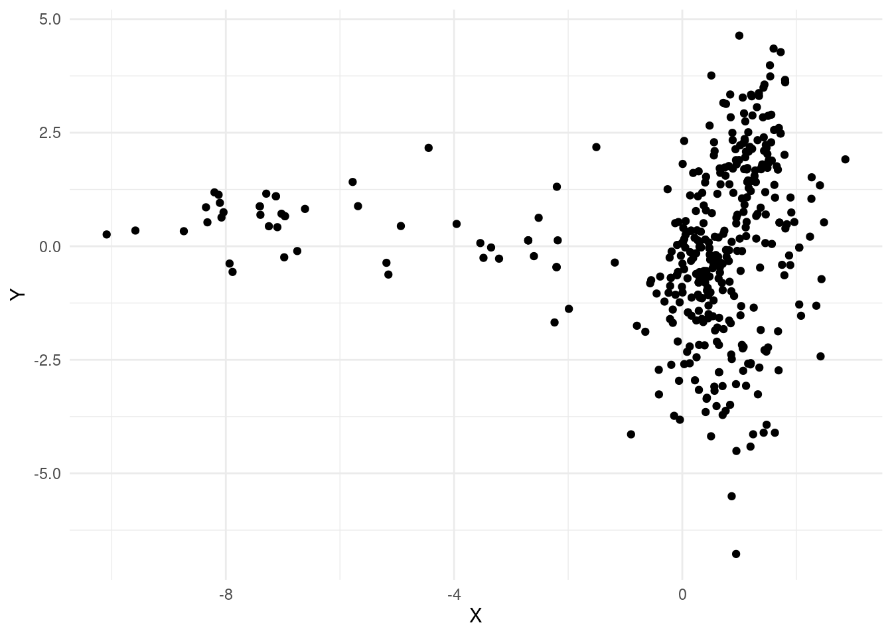
Este código genera un gráfico de dispersión utilizando las coordenadas “X” y “Y” del DataFrame tb_pca. Cada punto en el gráfico representa una observación en el espacio de las dos primeras componentes principales obtenidas a través del análisis de Componentes Principales (PCA). Explicación paso a paso del código:
- Operador
%>%(pipe):- El operador
%>%se utiliza para encadenar las operaciones, pasando el resultado de una operación como entrada a la siguiente.
- El operador
ggplot:- Se inicia la construcción de un gráfico utilizando la librería
ggplot2.
- Se inicia la construcción de un gráfico utilizando la librería
aes(x = X, y = Y):- Se especifica que las coordenadas “X” y “Y” del DataFrame
tb_pcase utilizarán como ejes x e y, respectivamente.
- Se especifica que las coordenadas “X” y “Y” del DataFrame
geom_point():- Agrega una capa de puntos al gráfico, creando un gráfico de dispersión.
sns.scatterplot(x = "X", y = "Y", data = tb_pca)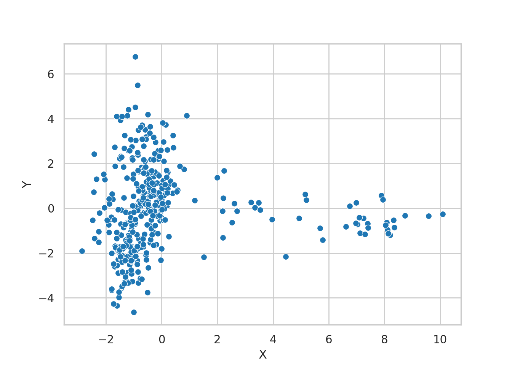
El gráfico de dispersión representa cada punto como una observación del DataFrame tb_pca. Las coordenadas “X” y “Y” se utilizan como posiciones en los ejes x e y, proporcionando una visualización de las dos primeras componentes principales obtenidas a través del análisis de Componentes Principales (PCA) utilizando la librería Seaborn. Explicación paso a paso del código:
sns.scatterplot: Se utiliza la funciónsns.scatterplotpara crear un gráfico de dispersión.x="X", y="Y"especifica que las coordenadas “X” y “Y” del DataFrametb_pcase utilizarán como ejes x e y, respectivamente.data=tb_pcaindica que los datos provienen de este DataFrame.
Teniendo los resultados del análisis previo, podemos usar el dataframe tb_grupos en esta visualización para revisar los grupos. Es necesario cambiar la variable indicadora del grupo a texto, de lo contrario no vamos a tener una buena visualización.
tb_pca %>%
bind_cols(tb_grupos) %>%
mutate(
# en esta línea podemos cambiar los grupos
grupo = as.character(grupos_jerar)
) %>%
ggplot +
aes(x = X, y = Y, col = grupo) +
geom_point() 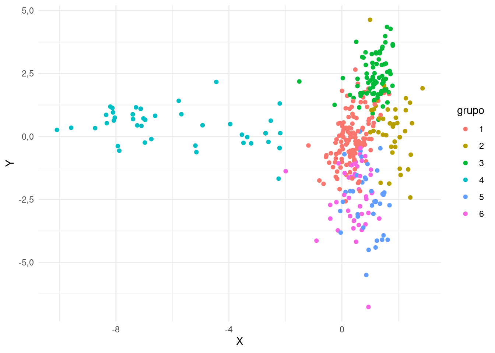
Se obtiene un gráfico de dispersión donde cada punto representa una observación del DataFrame resultante de combinar tb_pca y tb_grupos. Los puntos se colorean según la columna “grupo”. Este gráfico proporciona una visualización de las dos primeras componentes principales junto con la información de grupos proporcionada por tb_grupos. Explicación paso a paso del código:
- Utilizar
bind_colspara combinar DataFrames:tb_pca %>% bind_cols(tb_grupos): Utiliza el operador%>%para encadenar operaciones.bind_colscombina horizontalmente (cbinden R) los DataFramestb_pcaytb_grupos.
- Agregar una Columna de Grupos:
mutate(...): Utilizamutatepara agregar o modificar columnas en el DataFrame resultante de la combinación.grupo = as.character(grupos_jerar): Agrega una nueva columna llamada “grupo”, que se obtiene de la columnagrupos_jerar. Se convierte a tipo de dato caracter (as.character) para asegurar que sea tratado como categoría.
- Crear un Gráfico de Dispersión con Colores por Grupo:
ggplot: Inicia la construcción de un gráfico utilizando la libreríaggplot2.aes(x = X, y = Y, col = grupo): Especifica que las coordenadas “X” y “Y” del DataFrame se utilizarán como ejes x e y, respectivamente, y se asignarán colores según la columna “grupo”.
- Agregar Puntos al Gráfico:
geom_point(): Agrega una capa de puntos al gráfico, creando un gráfico de dispersión.
tb_tmp = pd.concat([tb_pca, tb_grupos], axis = 1)
# en esta línea podemos cambiar los grupos
tb_tmp["grupo"] = tb_tmp["grupos_jerar"].astype("string")
sns.scatterplot(x = "X", y = "Y", hue = "grupo", data = tb_tmp)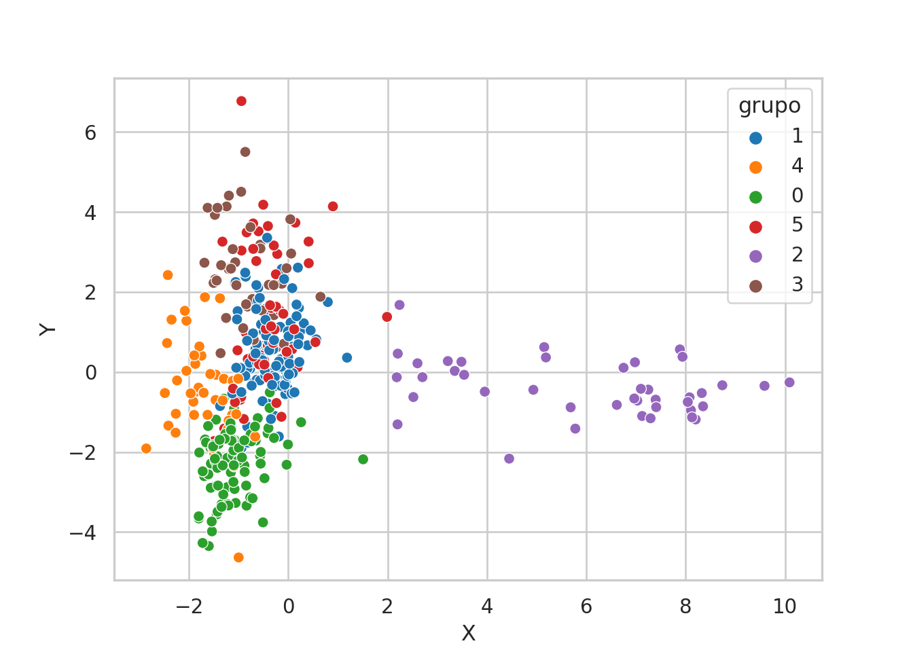
Se obtiene un gráfico de dispersión donde cada punto representa una observación del DataFrame tb_tmp, con las coordenadas “X” y “Y” como posiciones en los ejes x e y, respectivamente. Los puntos se colorearán según la información de la columna “grupo”, proporcionando una visualización de las dos primeras componentes principales junto con la información de grupos proveniente de tb_grupos. Explicación paso a paso del código:
- Concatenar DataFrames Horizontalmente:
tb_tmp = pd.concat([tb_pca, tb_grupos], axis=1): Se utiliza la funciónconcatde Pandas para concatenar horizontalmente (axis=1) los DataFramestb_pcaytb_grupos. El resultado es almacenado en el DataFrametb_tmp.
- Agregar una Columna de Grupos al DataFrame Resultante:
tb_tmp["grupo"] = tb_tmp["grupos_jerar"].astype("string"): Se agrega una nueva columna llamada “grupo” al DataFrametb_tmp. Esta columna se obtiene de la columna “grupos_jerar” y se convierte al tipo de dato string (astype("string")).
- Crear un Gráfico de Dispersión con Seaborn:
sns.scatterplot(x="X", y="Y", hue="grupo", data=tb_tmp): Se utiliza la funciónscatterplotde Seaborn para crear un gráfico de dispersión.x="X", y="Y"especifica que las coordenadas “X” y “Y” del DataFrametb_tmpse utilizarán como ejes x e y, respectivamente.hue="grupo"asigna colores según la columna “grupo”, lo que proporciona información de los grupos en el gráfico.
A continuación, hacemos una gráfica de las pinturas usando las pinturas. De esta forma vamos a poder revisar cuáles pinturas resultan cercanas y a qué regiones pertenecen. Estas gráficas son computacionalmente exigentes; es recomendable guardarlas (no mostrarlas de inmediato), a menos que estemos trabajando en un computador muy potente.
tb_pca %>%
mutate(
archivos_pinturas = file.path(mi_setup$carpeta_pinturas, dir(mi_setup$carpeta_pinturas))
) %>% ggplot() +
geom_image(aes(x = X, y = Y, image = archivos_pinturas), size = 0.03) +
theme_void() -> gr_tmp # Es mejor guardar la imagen que abrirla en la sesión
ggsave(mi_setup$gr_acp_file, gr_tmp, width = 200, height = 200, units = "mm")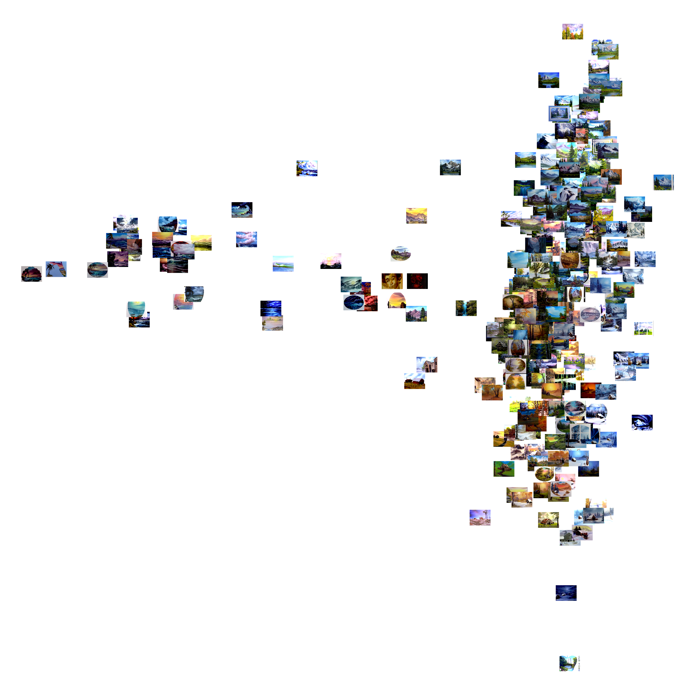
Se elabora un gráfico de dispersión utilizando las imágenes de las pinturas en vez de puntos. Explicación paso a paso del código:
- Modificar el DataFrame con
mutate:- Se utiliza
mutatepara agregar una nueva columna llamada “archivos_pinturas” al DataFrametb_pca. Esta columna contiene la ruta completa de los archivos de pinturas ubicados en la carpeta especificada enmi_setup$carpeta_pinturas. - La estructura de tuberías (
%>%) se utiliza para encadenar las operaciones, pasando el resultado de una a la siguiente.
- Se utiliza
- Crear un Gráfico con Imágenes:
ggplot() + geom_image(...): Se inicia la construcción de un gráfico utilizando la libreríaggplot2. Se utilizageom_imagepara agregar imágenes al gráfico, utilizando las coordenadas “X” y “Y” del DataFrametb_pcay la ruta de las imágenes en la columna “archivos_pinturas”.
- Establecer un Tema Visual:
theme_void(): Aplica un tema visual que elimina elementos como ejes y fondos, dejando solo las imágenes.
- Guardar el Gráfico en una Variable:
-> gr_tmp: Se utiliza->para asignar el gráfico resultante a la variablegr_tmp.
- Guardar el Gráfico como Archivo:
ggsave(...): Se utilizaggsavepara guardar el gráfico en un archivo. La ruta y el nombre del archivo se especifican enmi_setup$gr_acp_file. Se ajustan también las dimensiones del archivo y la unidad de medida.
def getImage(path):
return OffsetImage(plt.imread(path), zoom=.1, alpha = 1)
nombres_archivos_pinturas = os.listdir(mi_setup["carpeta_pinturas"])
nombres_archivos_pinturas.sort()
tb_pca["archivos_pinturas"] = list(map(
lambda dir: os.path.join(mi_setup["carpeta_pinturas"],dir),
nombres_archivos_pinturas
))
fig, ax = plt.subplots(figsize=(25, 25))
ax.scatter(tb_pca["X"], tb_pca["Y"], color="white")
for index, row in tb_pca.iterrows():
ab = AnnotationBbox(getImage(row["archivos_pinturas"]), (row["X"], row["Y"]), frameon=False)
ax.add_artist(ab)
plt.savefig(mi_setup["gr_acp_file"], dpi = 100)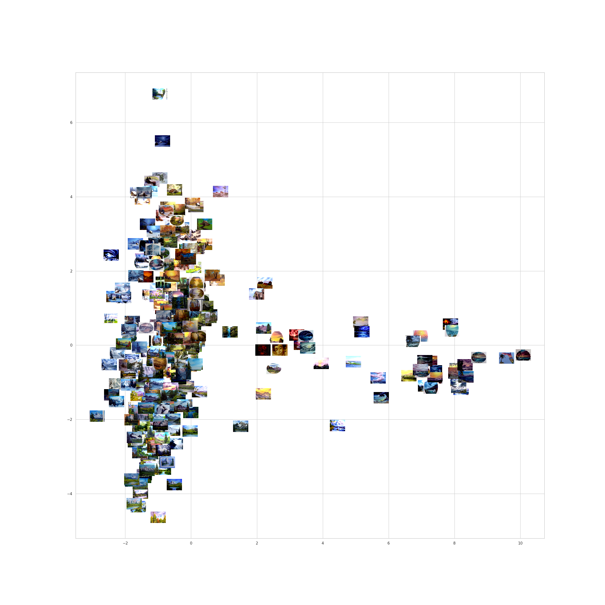
Se elabora un gráfico de dispersión utilizando las imágenes de las pinturas en vez de puntos. Explicación paso a paso del código:
- Definir la Función
getImage:- Se define una función llamada
getImageque toma una ruta de archivo como argumento y devuelve un objetoOffsetImageque contiene la imagen con ciertas propiedades de zoom y transparencia.
- Se define una función llamada
- Obtener Nombres de Archivos de Pinturas:
- Se obtienen los nombres de los archivos de pinturas en la carpeta especificada en
mi_setup["carpeta_pinturas"]y se almacenan en la listanombres_archivos_pinturas. Esta lista se ordena alfabéticamente.
- Se obtienen los nombres de los archivos de pinturas en la carpeta especificada en
- Asignar Rutas Completas a las Imágenes en el DataFrame:
- Se utiliza
mapjunto conlambdapara crear una nueva columna en el DataFrametb_pcallamada “archivos_pinturas”, que contiene las rutas completas de las imágenes de pinturas.
- Se utiliza
- Crear un Gráfico de Dispersión Vacío:
- Se crea un gráfico de dispersión vacío utilizando
plt.subplots, con un tamaño de figura de 25x25.
- Se crea un gráfico de dispersión vacío utilizando
- Agregar Puntos Blancos al Gráfico:
- Se agrega una capa de puntos blancos al gráfico de dispersión en las coordenadas especificadas por las columnas “X” y “Y” del DataFrame
tb_pca.
- Se agrega una capa de puntos blancos al gráfico de dispersión en las coordenadas especificadas por las columnas “X” y “Y” del DataFrame
- Agregar Imágenes al Gráfico:
- Se utiliza un bucle
forpara iterar sobre las filas detb_pca. Para cada fila, se crea un objetoAnnotationBboxque contiene la imagen de la pintura y se agrega al gráfico en las coordenadas correspondientes.
- Se utiliza un bucle
- Guardar el Gráfico como Archivo:
- Se guarda el gráfico como un archivo de imagen en la ruta especificada en
mi_setup["gr_acp_file"], con una resolución de 100 dpi.
- Se guarda el gráfico como un archivo de imagen en la ruta especificada en
Muy bien, es hora de pasar al t-SNE. Queremos hacer las mismas gráficas pero esta vez con el algoritmo t-SNE y observar los cambios.
t-SNE
En primer lugar realizamos la reducción a 2 dimensiones aplicando el algoritmo t-SNE a nuestro dataset de características tb_pinturas_caract. En este ejemplo, utilizamos un perplexity = 20, pero podríamos utilizar cualquier otro valor entre 1 y 50.
tsne(
dist(tb_pinturas_caract),
perplexity = 20,
k = 2,
initial_dims = ncol(tb_pinturas_caract)
) -> mt_tsne_resultado
mt_tsne_resultado %>%
as_tibble(.name_repair = "minimal") %>%
setNames(c("X", "Y")) -> tb_tsneExplicación paso a paso del código:
- Aplicar el Método t-SNE:
- Se utiliza la función
tsnepara aplicar el método t-SNE a la matriz de distancias de las características de las pinturas contenidas entb_pinturas_caract. Se especifican parámetros como la perplexidad, el número de dimensiones, y las dimensiones iniciales.
- Se utiliza la función
- Asignar el Resultado a una Variable:
- El resultado de la aplicación de t-SNE se asigna a la variable
mt_tsne_resultado.
- El resultado de la aplicación de t-SNE se asigna a la variable
- Transformar el Resultado a un DataFrame Tibble:
- Se utiliza
%>%para encadenar operaciones. El resultado de t-SNE se transforma a un DataFrame tibble y se renombran las columnas como “X” y “Y”. El resultado se almacena en el DataFrametb_tsne.
- Se utiliza
mod_tsne = TSNE(n_components=2, learning_rate='auto', init='random', perplexity=20)
mt_tsne_resultado = mod_tsne.fit_transform(tb_pinturas_caract)
tb_tsne = pd.DataFrame(
data = mt_tsne_resultado,
columns = ["X", "Y"]
)Explicación paso a paso del código:
- Configuración del Modelo t-SNE:
- Se instancia un modelo t-SNE utilizando la clase
TSNEdel paquetesklearn. Se especifican parámetros como el número de componentes, la tasa de aprendizaje, el método de inicialización y la perplexidad.
- Se instancia un modelo t-SNE utilizando la clase
- Ajuste del Modelo y Transformación de los Datos:
- Se ajusta el modelo t-SNE a las características de las pinturas contenidas en
tb_pinturas_caractutilizando el métodofit_transform. Esto realiza el proceso de reducción de dimensionalidad y devuelve las coordenadas en el espacio de baja dimensión.
- Se ajusta el modelo t-SNE a las características de las pinturas contenidas en
- Creación de un DataFrame con los Resultados:
- Se crea un DataFrame llamado
tb_tsnecon las coordenadas resultantes del t-SNE, asignando nombres a las columnas como “X” y “Y”.
- Se crea un DataFrame llamado
Ahora tenemos un nuevo dataframe tb_tsne en el que guardamos las coordenadas de nuestras pinturas. Vamos a visualizarlas:
tb_tsne %>%
ggplot +
aes(x = X, y = Y) +
geom_point() 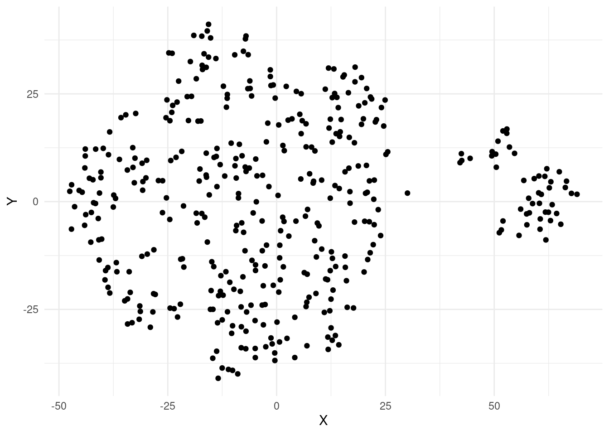
Este código genera un gráfico de dispersión utilizando las coordenadas “X” y “Y” del DataFrame tb_tsne. Cada punto en el gráfico representa una observación en el espacio bidimensional obtenido a través del algoritmo t-SNE. Explicación paso a paso del código:
- Operador
%>%(pipe):- El operador
%>%se utiliza para encadenar las operaciones, pasando el resultado de una operación como entrada a la siguiente.
- El operador
ggplot:- Se inicia la construcción de un gráfico utilizando la librería
ggplot2.
- Se inicia la construcción de un gráfico utilizando la librería
aes(x = X, y = Y):- Se especifica que las coordenadas “X” y “Y” del DataFrame
tb_tsnese utilizan como ejes x e y, respectivamente.
- Se especifica que las coordenadas “X” y “Y” del DataFrame
geom_point():- Agrega una capa de puntos al gráfico, creando un gráfico de dispersión.
sns.scatterplot(x = "X", y = "Y", data = tb_tsne)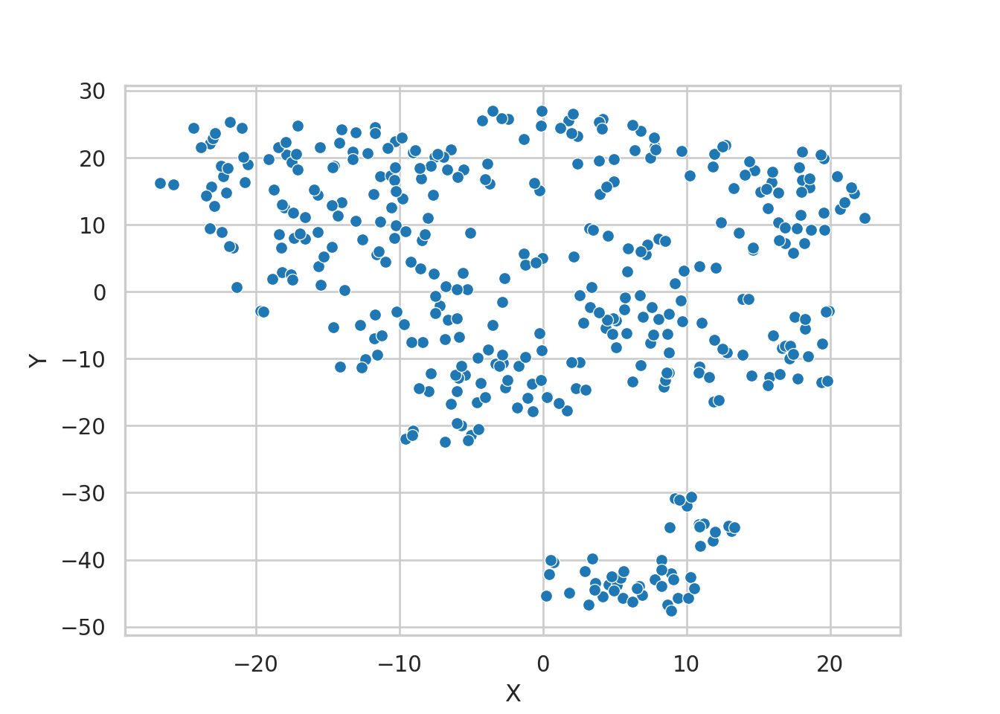
El gráfico de dispersión representa cada punto como una observación del DataFrame tb_tsne. Las coordenadas “X” y “Y” se utilizan como posiciones en los ejes x e y, proporcionando una visualización del espacio bidimensional obtenido a través del algoritmo t-SNE, utilizando la librería Seaborn. Explicación paso a paso del código:
sns.scatterplot: Se utiliza la funciónsns.scatterplotpara crear un gráfico de dispersión.x="X", y="Y"especifica que las coordenadas “X” y “Y” del DataFrametb_tsnese utilizan como ejes x e y, respectivamente.data=tb_tsneindica que los datos provienen de este DataFrame.
Teniendo los resultados del análisis previo, podemos usar el dataframe tb_grupos en esta visualización para revisar los grupos. Es necesario cambiar la variable indicadora del grupo a texto, de lo contrario no vamos a tener una buena visualización.
tb_tsne %>%
bind_cols(tb_grupos) %>%
mutate(
# en esta línea podemos cambiar los grupos
grupo = as.character(grupos_jerar)
) %>%
ggplot +
aes(x = X, y = Y, col = grupo) +
geom_point() 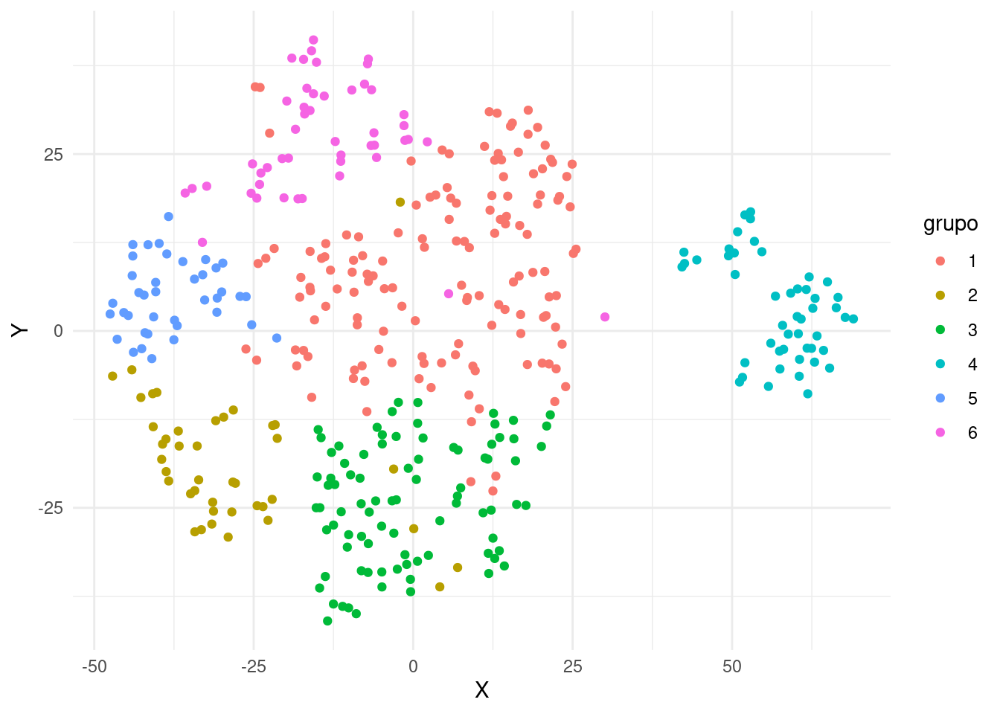
Se obtiene un gráfico de dispersión donde cada punto representa una observación del DataFrame resultante de combinar tb_tsne y tb_grupos. Los puntos se colorean según la columna “grupo”. Este gráfico proporciona una visualización del espacio bidimensional obtenido a través del algoritmo t-SNE junto con la información de grupos proporcionada por tb_grupos. Explicación paso a paso del código:
- Utilizar
bind_colspara combinar DataFrames:tb_tsne %>% bind_cols(tb_grupos): Utiliza el operador%>%para encadenar operaciones.bind_colscombina horizontalmente (cbinden R) los DataFramestb_tsneytb_grupos.
- Agregar una Columna de Grupos:
mutate(...): Utilizamutatepara agregar o modificar columnas en el DataFrame resultante de la combinación.grupo = as.character(grupos_jerar): Agrega una nueva columna llamada “grupo”, que se obtiene de la columnagrupos_jerar. Se convierte a tipo de dato caracter (as.character) para asegurar que sea tratado como categoría.
- Crear un Gráfico de Dispersión con Colores por Grupo:
ggplot: Inicia la construcción de un gráfico utilizando la libreríaggplot2.aes(x = X, y = Y, col = grupo): Especifica que las coordenadas “X” y “Y” del DataFrame se utilizarán como ejes x e y, respectivamente, y se asignarán colores según la columna “grupo”.
- Agregar Puntos al Gráfico:
geom_point(): Agrega una capa de puntos al gráfico, creando un gráfico de dispersión.
tb_tmp = pd.concat([tb_tsne, tb_grupos], axis = 1)
# en esta línea podemos cambiar los grupos
tb_tmp["grupo"] = tb_tmp["grupos_jerar"].astype("string")
sns.scatterplot(x = "X", y = "Y", hue = "grupo", data = tb_tmp)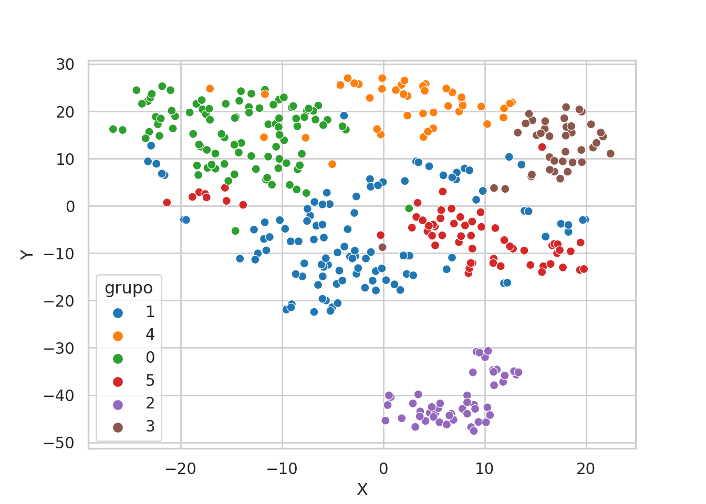
Se obtiene un gráfico de dispersión donde cada punto representa una observación del DataFrame tb_tmp, con las coordenadas “X” y “Y” como posiciones en los ejes x e y, respectivamente. Los puntos se colorean según la información de la columna “grupo”, proporcionando una visualización del espacio bidimensional obtenido a través del algoritmo t-SNE junto con la información de grupos proveniente de tb_grupos. Explicación paso a paso del código:
- Concatenar DataFrames Horizontalmente:
tb_tmp = pd.concat([tb_tsne, tb_grupos], axis=1): Se utiliza la funciónconcatde la libreríapandaspara concatenar horizontalmente (axis=1) los DataFramestb_tsneytb_grupos. El resultado es almacenado en el DataFrametb_tmp.
- Agregar una Columna de Grupos al DataFrame Resultante:
tb_tmp["grupo"] = tb_tmp["grupos_jerar"].astype("string"): Se agrega una nueva columna llamada “grupo” al DataFrametb_tmp. Esta columna se obtiene de la columna “grupos_jerar” y se convierte al tipo de dato string (.astype("string")).
- Crear un Gráfico de Dispersión con Seaborn:
sns.scatterplot(x="X", y="Y", hue="grupo", data=tb_tmp): Se utiliza la funciónscatterplotde Seaborn para crear un gráfico de dispersión.x="X", y="Y"especifica que las coordenadas “X” y “Y” del DataFrametb_tmpse utilizarán como ejes x e y, respectivamente.hue="grupo"asigna colores según la columna “grupo”, lo que proporciona información de los grupos en el gráfico.
A continuación, hacemos una gráfica de las pinturas usando las pinturas. De esta forma vamos a poder revisar cuáles pinturas resultan cercanas y a qué regiones pertenecen. Estas gráficas son computacionalmente exigentes; es recomendable guardarlas (no mostrarlas de inmediato), a menos que estemos trabajando en un computador muy potente.
tb_tsne %>%
mutate(
archivos_pinturas = file.path(mi_setup$carpeta_pinturas, dir(mi_setup$carpeta_pinturas))
) %>% ggplot() +
geom_image(aes(x = X, y = Y, image = archivos_pinturas), size = 0.03) +
theme_void() -> gr_tmp # Es mejor guardar la imagen que abrirla en la sesión
ggsave(mi_setup$gr_tsne_file, gr_tmp, width = 200, height = 200, units = "mm")Se elabora un gráfico de dispersión utilizando las imágenes de las pinturas en vez de puntos. Explicación paso a paso del código:
- Modificar el DataFrame con
mutate:- Se utiliza
mutatepara agregar una nueva columna llamada “archivos_pinturas” al DataFrametb_tsne. Esta columna contiene la ruta completa de los archivos de pinturas ubicados en la carpeta especificada enmi_setup$carpeta_pinturas. - La estructura de tuberías (
%>%) se utiliza para encadenar las operaciones, pasando el resultado de una a la siguiente.
- Se utiliza
- Crear un Gráfico con Imágenes:
ggplot() + geom_image(...): Se inicia la construcción de un gráfico utilizando la libreríaggplot2. Se utilizageom_imagepara agregar imágenes al gráfico, utilizando las coordenadas “X” y “Y” del DataFrametb_tsney la ruta de las imágenes en la columna “archivos_pinturas”.
- Establecer un Tema Visual:
theme_void(): Aplica un tema visual que elimina elementos como ejes y fondos, dejando solo las imágenes.
- Guardar el Gráfico en una Variable:
-> gr_tmp: Se utiliza->para asignar el gráfico resultante a la variablegr_tmp.
- Guardar el Gráfico como Archivo:
ggsave(...): Se utilizaggsavepara guardar el gráfico en un archivo. La ruta y el nombre del archivo se especifican enmi_setup$gr_tsne_file. Se ajustan también las dimensiones del archivo y la unidad de medida.
# En caso de que no hayamos corrido el código previo:
# def getImage(path):
# return OffsetImage(plt.imread(path), zoom=.1, alpha = 1)
#
# nombres_archivos_pinturas = os.listdir(mi_setup["carpeta_pinturas"])
#
# nombres_archivos_pinturas.sort()
tb_tsne["archivos_pinturas"] = list(map(
lambda dir: os.path.join(mi_setup["carpeta_pinturas"],dir),
nombres_archivos_pinturas
))
fig, ax = plt.subplots(figsize=(25, 25))
ax.scatter(tb_tsne["X"], tb_tsne["Y"], color="white")
for index, row in tb_tsne.iterrows():
ab = AnnotationBbox(getImage(row["archivos_pinturas"]), (row["X"], row["Y"]), frameon=False)
ax.add_artist(ab)
plt.savefig(mi_setup["gr_tsne_file"], dpi = 100)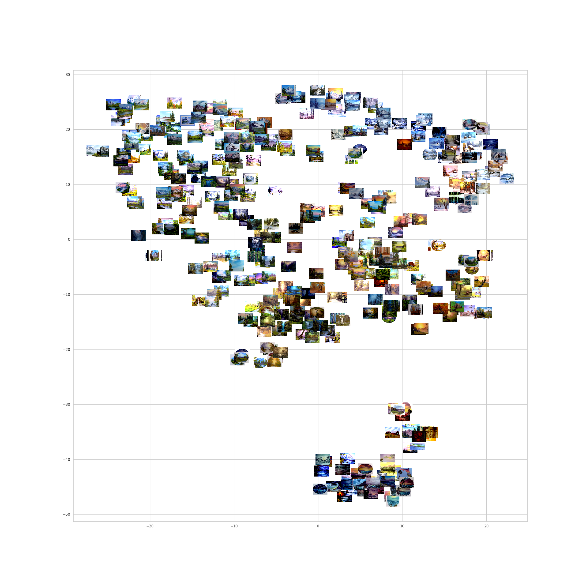
Se elabora un gráfico de dispersión utilizando las imágenes de las pinturas en vez de puntos. Explicación paso a paso del código:
- Definir la Función
getImage:- Se define una función llamada
getImageque toma una ruta de archivo como argumento y devuelve un objetoOffsetImageque contiene la imagen con ciertas propiedades de zoom y transparencia.
- Se define una función llamada
- Obtener Nombres de Archivos de Pinturas:
- Se obtienen los nombres de los archivos de pinturas en la carpeta especificada en
mi_setup["carpeta_pinturas"]y se almacenan en la listanombres_archivos_pinturas. Esta lista se ordena alfabéticamente.
- Se obtienen los nombres de los archivos de pinturas en la carpeta especificada en
- Asignar Rutas Completas a las Imágenes en el DataFrame:
- Se utiliza
mapjunto conlambdapara crear una nueva columna en el DataFrametb_tsnellamada “archivos_pinturas”, que contiene las rutas completas de las imágenes de pinturas.
- Se utiliza
- Crear un Gráfico de Dispersión Vacío:
- Se crea un gráfico de dispersión vacío utilizando
plt.subplots, con un tamaño de figura de 25x25.
- Se crea un gráfico de dispersión vacío utilizando
- Agregar Puntos Blancos al Gráfico:
- Se agrega una capa de puntos blancos al gráfico de dispersión en las coordenadas especificadas por las columnas “X” y “Y” del DataFrame
tb_tsne.
- Se agrega una capa de puntos blancos al gráfico de dispersión en las coordenadas especificadas por las columnas “X” y “Y” del DataFrame
- Agregar Imágenes al Gráfico:
- Se utiliza un bucle
forpara iterar sobre las filas detb_tsne. Para cada fila, se crea un objetoAnnotationBboxque contiene la imagen de la pintura y se agrega al gráfico en las coordenadas correspondientes.
- Se utiliza un bucle
- Guardar el Gráfico como Archivo:
- Se guarda el gráfico como un archivo de imagen en la ruta especificada en
mi_setup["gr_tsne_file"], con una resolución de 100 dpi.
- Se guarda el gráfico como un archivo de imagen en la ruta especificada en
Conclusión
Hemos terminado. Ahora tenemos visualizaciones para nuestros datos. Hemos utilizado los métodos de reducción de dimensiones ACP y t-SNE para inspeccionar nuestros datos visualmente. Tal vez hayamos notado diferencias entre los resultados de ambos métodos, esto se debe a su carácter lineal/no lineal. En las próximas unidades indagaremos en los detalles de las visualizaciones y encontraremos los mejores usos para cada uno de ellos.